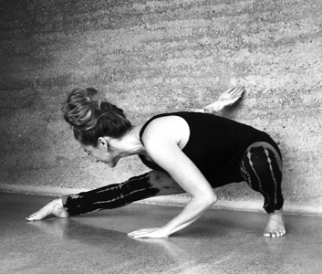

 
Jaymin was introduced, while living in London, to Shadow Yoga in 2002 after a few years of casually exploring other yoga styles. Different from anything she had encountered in other classes she immediately recognised the intelligence in the shadow systems approach to working with the body, and consequently the mind.
A native New Zealander, Jaymin stayed in London so she could continue to study shadow yoga with a couple of years at Islington yoga on their teacher training programme and with her mentor Jana Appleyard at Yoga in the City. Jaymin has studied with Jana since 2004 and continued her teacher training in the form of a 3 year apprenticeship. Jaymin still studies with Jana, as well as teaching classes and workshops at Yoga in the City when she is in London.
Jaymin is continuing her Shadow Yoga development with a 3 year teachers training programme that started in 2009 with Zhander Remeter (founder of Shadow Yoga) and Emma Balnaves.